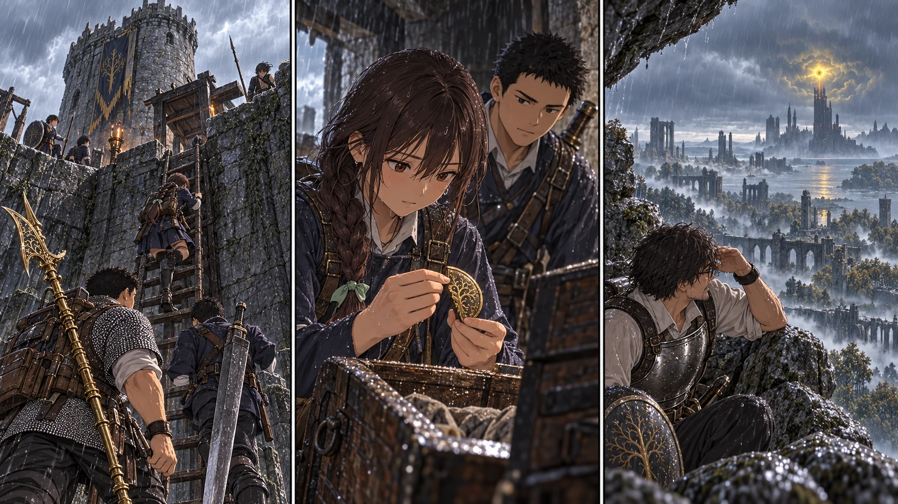

帰り道を増やした五日間
DAY42〜46。下へ読み進めると、城への護送から湖の地図、二枚の割符、狂い火の塔、次の攻略先の下見まで辿れます。各日の画像を押すと、その日の本文を開きます。
全33人が教会へ帰還。期間中の新たな死亡0。先生Lv40／探索隊Lv23・24・34／生活隊Lv12。次の赤月はDAY50、あと4日。DAY47からの方針は判断待ちです。

DAY42 ／ TURN 1−5232人生徒を小部屋へ徒歩護送し全員登録、先生は湖方面を非交戦偵察。夕に全33人教会帰還・休息。
この日の本文を読む → 
DAY43 ／ TURN 1−53探索12人がハイト砦の左割符を持帰り、先生は狂い火の塔を遠望。全33人教会帰還・夕休息。
この日の本文を読む → 
DAY44 ／ TURN 1−54先生はベイルム教会を確認。二隊はケイリッドで無理せず引返し、右割符未取得。全33人教会帰還。
この日の本文を読む → 
DAY45 ／ TURN 1−55先生が塔の眼を停止し、二隊が右割符を回収。全33人教会帰還・夕休息。昇降機は未起動。
この日の本文を読む → 
DAY46 ／ TURN 1−56先生が北部地図と学院の封印外観を確認。全33人教会帰還・休息。5日進行終了、DAY47はユーザー判断待ち。
この日の本文を読む → 日々の記録
| 日 | 天候 | ルーン | 矢 | 未解放の予備祝福 |
|---|
| DAY42 | 曇り・弱風 | 2529 | 214 | 10 |
| DAY43 | 雨 | 1460 | 204 | 11 |
| DAY44 | 曇り | 541 | 300 | 12 |
| DAY45 | 曇り | 621 | 286 | 14 |
| DAY46 | 雨 | 856 | 278 | 16 |
人数・物資消費・ルーン費用・移動時間・集団戦は本卓のルール。水の数量は簡略化したゲーム台帳で、現実の33人分の飲用必要量を示しません。各日の条件とプログラムのダイス記録はstoryフォルダに保存しています。